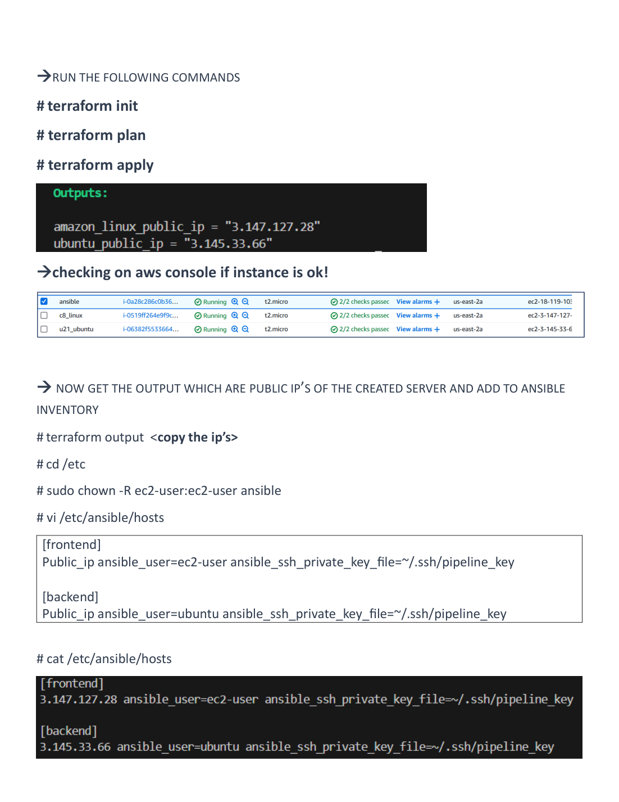
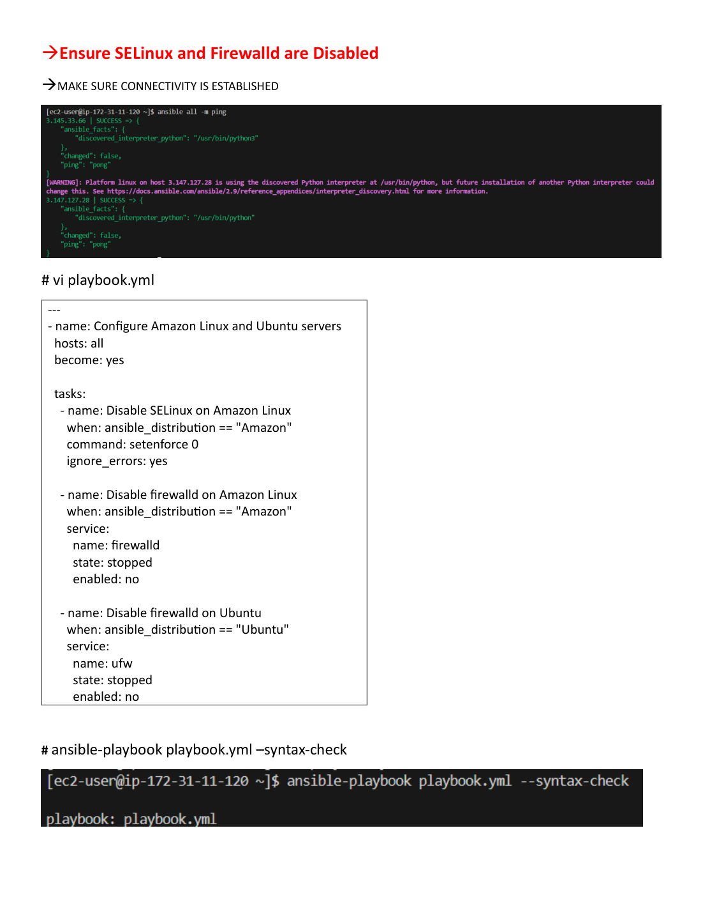
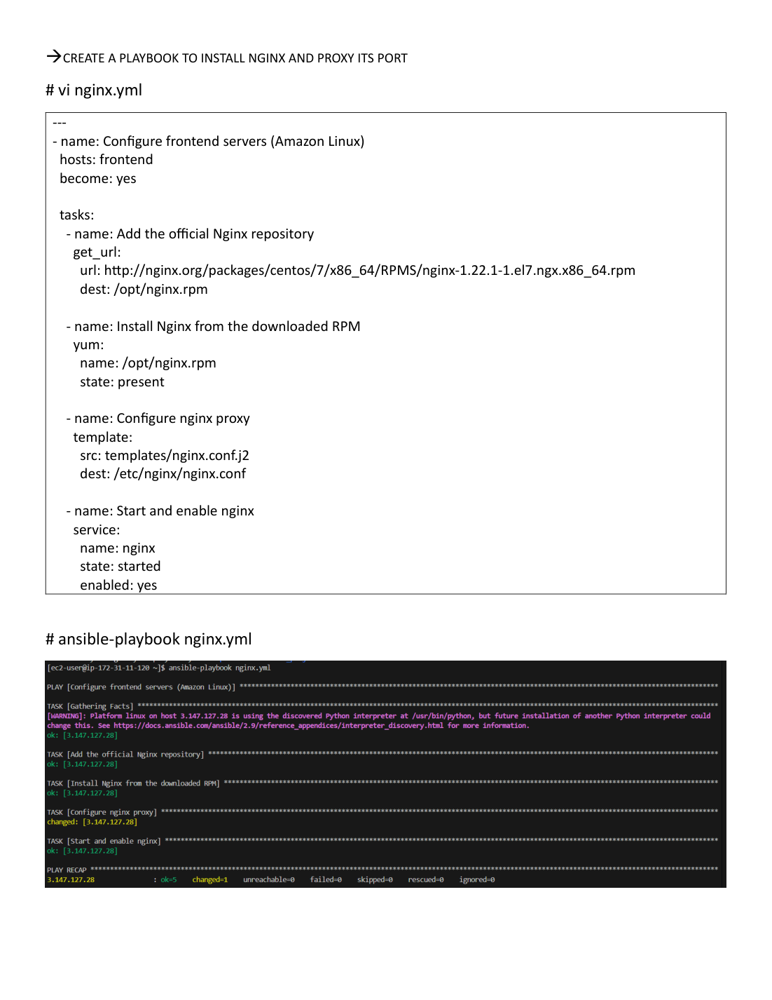
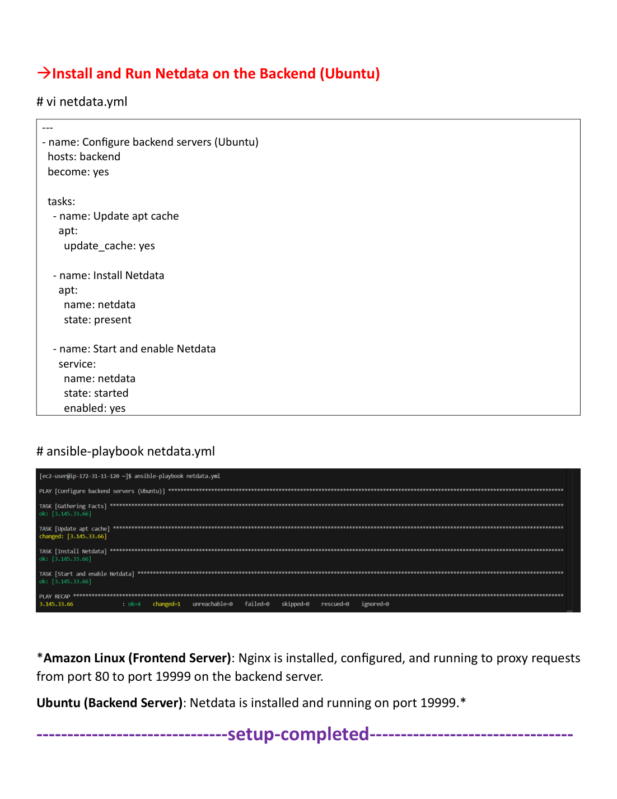
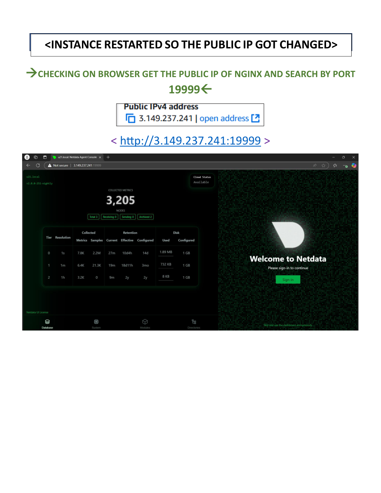

AWS infrastructure provisioning with Terraform and Ansible
A documented workflow for provisioning two EC2 instances, configuring Nginx as a reverse proxy, and serving the Netdata monitoring interface from a backend host.
1. Overview
The project separates infrastructure provisioning from operating-system and application configuration. Terraform creates the AWS resources and exports instance details; Ansible uses the resulting inventory to configure the hosts and services.
Provision infrastructure
Terraform manages EC2 instances, security groups, SSH key association, tags and useful outputs.
Configure services
Ansible applies common host configuration, installs Nginx on the frontend and Netdata on the backend.
Route monitoring traffic
Clients connect to Nginx on TCP port 80. Nginx proxies the request to Netdata on backend port 19999.
Validate changes
Use connectivity checks, playbook results, service status and an HTTP request to verify the deployment.
2. Architecture
Nginx listens on TCP 80
Netdata listens on TCP 19999
Traffic path: client → frontend public endpoint :80 → Nginx reverse proxy → backend Netdata :19999.
3. Deployment workflow
The high-level sequence is shown below. Use the deployment guide for the exact commands and variable requirements.
Provision resources
Initialize Terraform, inspect the plan and apply the infrastructure configuration.
Generate inventory
Use Terraform outputs to produce Ansible host entries and assign frontend/backend groups.
Configure operating systems
Connect through SSH and apply baseline settings with Ansible.
Install and configure services
Install Nginx on the frontend and Netdata on the backend, then validate the proxy configuration.
Verify the result
Check Ansible recap, service state, network access and the Netdata endpoint through Nginx.
Terraform command sequence
cd terraform
cp terraform.tfvars.example terraform.tfvars
# Edit terraform.tfvars with your values
terraform init
terraform fmt -recursive
terraform validate
terraform plan
terraform applyContinue with the deployment guide for inventory generation, Ansible execution and endpoint checks.
4. Terraform
Terraform describes the infrastructure as code and provides outputs consumed by the configuration stage. The repository separates root configuration from a reusable EC2 module and keeps environment-specific values in variables.
Responsibilities
- Configure the AWS provider and target region.
- Discover or select suitable machine images rather than relying on stale image IDs.
- Create the frontend and backend EC2 instances with consistent tags and SSH key association.
- Define security-group rules for required traffic.
- Expose instance details and generate inventory data for Ansible.
See Terraform documentation and the Terraform source directory. Review every plan before applying it in your account.
5. Ansible configuration
The Ansible project uses a site playbook and separate roles so common host configuration is not mixed with application-specific tasks.
| Role | Target | Purpose |
|---|---|---|
common | All hosts | Apply shared operating-system configuration. |
nginx | frontend | Install Nginx, deploy the proxy template, validate/reload the service. |
netdata | backend | Install Netdata from the OS package source and ensure the service is enabled. |
Configuration entry points
ansible/playbooks/site.yml— orchestration playbook.hosts.ini.example— example inventory format.nginx.conf.j2— Nginx upstream and proxy configuration.
6. Networking and security
- Allow HTTP traffic to the frontend only where needed for the demonstration.
- Allow backend TCP 19999 only from the frontend security group, not from the public internet.
- Restrict SSH to a trusted administrator CIDR; avoid opening SSH to
0.0.0.0/0. - Do not commit AWS credentials, private keys, generated inventory containing sensitive data, Terraform state or real
terraform.tfvars. - The original PDF disables SELinux and the host firewall. That is not a general production recommendation; prefer explicit firewall rules and a least-privilege policy for real deployments.
More detail: security notes.
7. Validation and troubleshooting
Checks to run
# Terraform
terraform fmt -check -recursive
terraform validate
terraform plan
# Ansible (from the repository root)
ansible-playbook -i ansible/inventory/hosts.ini ansible/playbooks/site.yml --syntax-check
ansible -i ansible/inventory/hosts.ini all -m ping
# On the target hosts, verify services and listeners
sudo systemctl status nginx
sudo systemctl status netdata
ss -lntCommands assume the example inventory has been copied and filled with the correct addresses, usernames and private-key path. Follow the deployment guide for project-specific invocation details.
Common failure points
- SSH unreachable: check the key pair, username, security-group source CIDR and route to the instance.
- Proxy returns an error: check Nginx syntax, upstream address, backend security-group rule and Netdata service state.
- Dashboard cannot be reached: access through the frontend port 80 and do not expose backend port 19999 publicly.
- Terraform image error: confirm the selected AMI is available in the configured AWS region.
8. Screenshots and evidence
These images were extracted from the supplied project PDF. They document the original run, not a current live environment.





9. Setup guide
Prerequisites
- AWS account with permissions to create the resources defined by Terraform.
- Terraform, Ansible and AWS CLI installed on a trusted control node.
- An SSH key pair for the managed instances.
- A trusted public IP/CIDR for restricted SSH access.
Repository documentation
- README — project overview and quick start.
- Deployment guide — provisioning, configuration and teardown.
- Architecture notes — design details.
- Security notes — access and secret handling.
terraform destroy when finished, after reviewing the proposed changes.10. Limitations and future improvements
Included in this repository
- Variable-driven Terraform configuration and reusable EC2 module.
- Terraform outputs for dynamic Ansible inventory generation.
- Separate Ansible roles for baseline settings, Nginx and Netdata.
- Restrictive backend ingress design and deployment documentation.
- GitHub Actions checks for infrastructure and configuration code.
Possible next steps
- Move instances into private subnets and use AWS Systems Manager for administration.
- Add TLS with a managed certificate and a suitable endpoint.
- Use remote Terraform state with encryption and locking.
- Add integration tests and an approval gate before infrastructure changes.
- Document monitoring alerts, patch management and recovery procedures.
11. Learning outcomes and career use
This project demonstrates practical work with Infrastructure as Code, AWS EC2, Terraform modules and outputs, Ansible inventory and roles, Linux service management, Nginx reverse proxying, Netdata monitoring, network access controls and CI validation.
Use the resume and LinkedIn content as a starting point, but describe only the features you have personally deployed and tested.